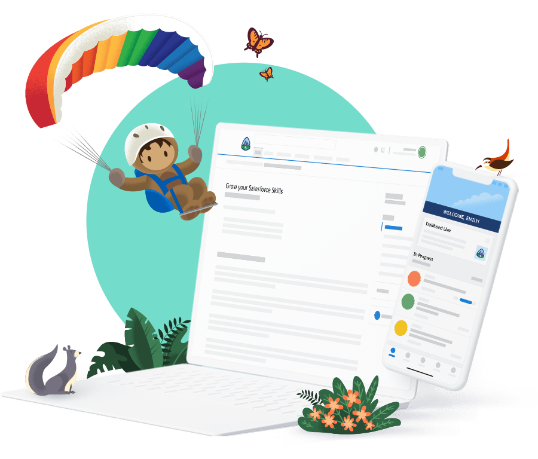

Sobre Mim
Sou um profissional apaixonado por tecnologia e especialista em criar soluções inovadoras na plataforma Salesforce. Meu objetivo é ajudar empresas a alcançar eficiência operacional e excelência no atendimento ao cliente.

Principais Competências
- Automação de Processos: Criação de fluxos e automações com o Flow Builder.
- Desenvolvimento: Apex, Lightning Web Components, SOQL e integração via APIs REST/SOAP.
- Administração Salesforce: Configuração de objetos, segurança, relatórios e dashboards.
- Consultoria: Análise de negócios e mapeamento de processos.
- Atendimento ao Cliente: Soluções com Service Cloud para gestão de casos e KPIs.
- Integração de Dados: Conexão de Salesforce com sistemas externos para sincronização de informações.
- Treinamento de Equipes: Capacitação de usuários e administradores em ferramentas Salesforce.
- Gerenciamento de Projetos: Planejamento, execução e entrega de soluções dentro dos prazos.
Sistema de Cadastro de Alunos
Este projeto foi desenvolvido para gerenciar o cadastro de alunos em cursos de diferentes modalidades. As principais funcionalidades incluem:
- Validação de Idade: Apenas maiores de 18 anos podem se cadastrar.
- Modalidades: Exibição de cursos com base nas modalidades selecionadas.
- Validação de CPF: Garantia de dados válidos e consistentes.
- Registro de Sexo: Coleta e validação de informações sobre gênero.
Confira o vídeo demonstrativo do sistema: